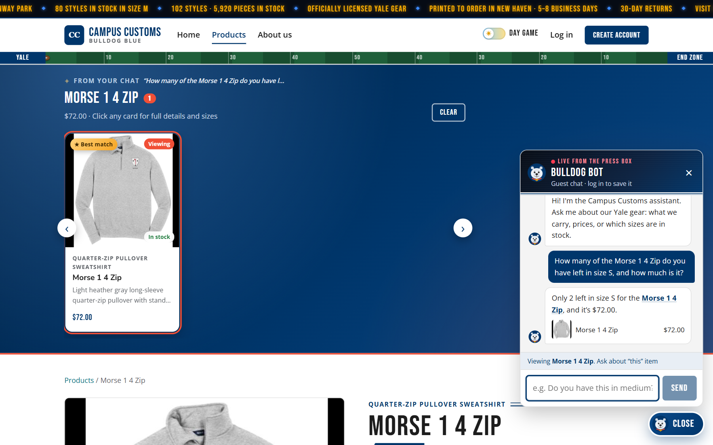
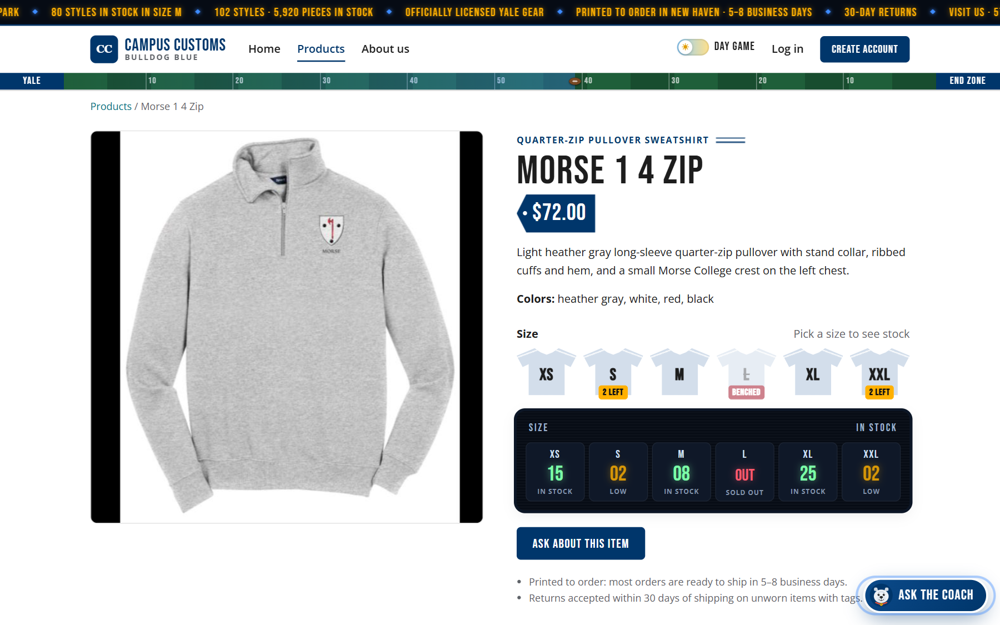
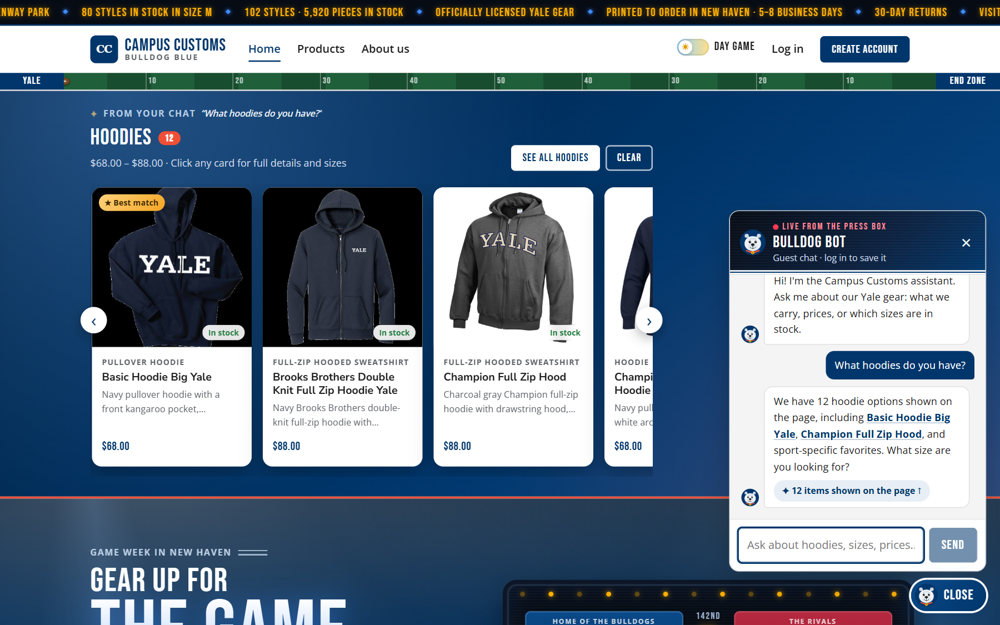
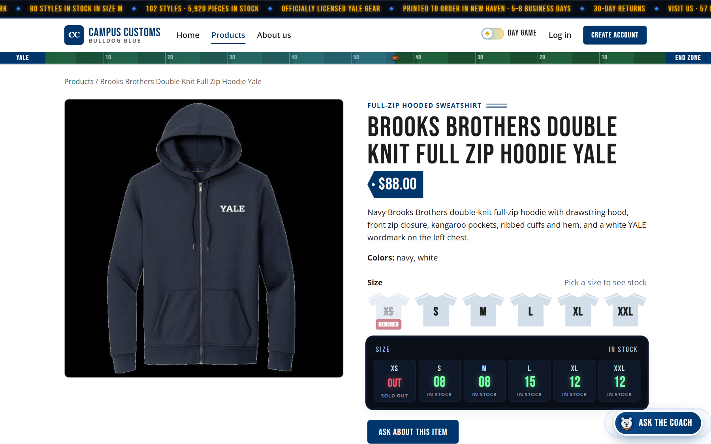
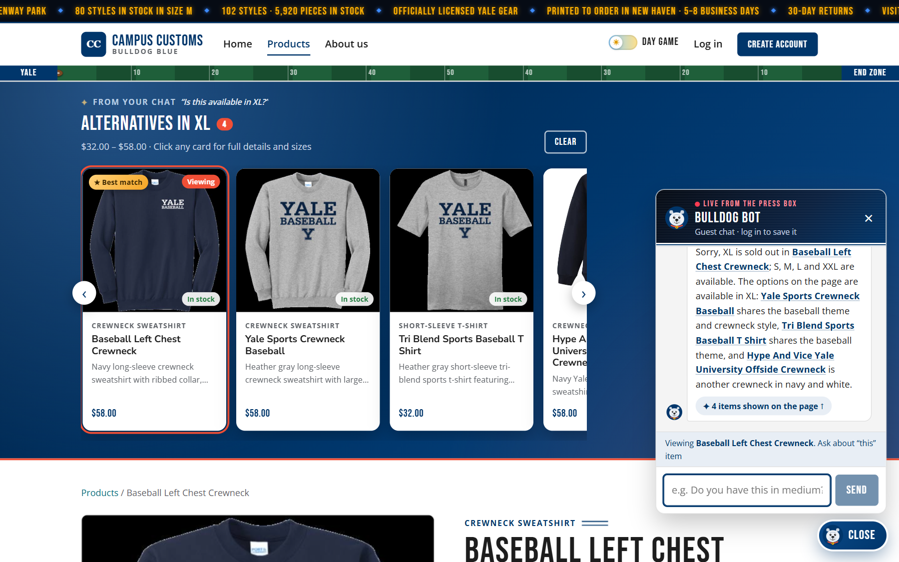
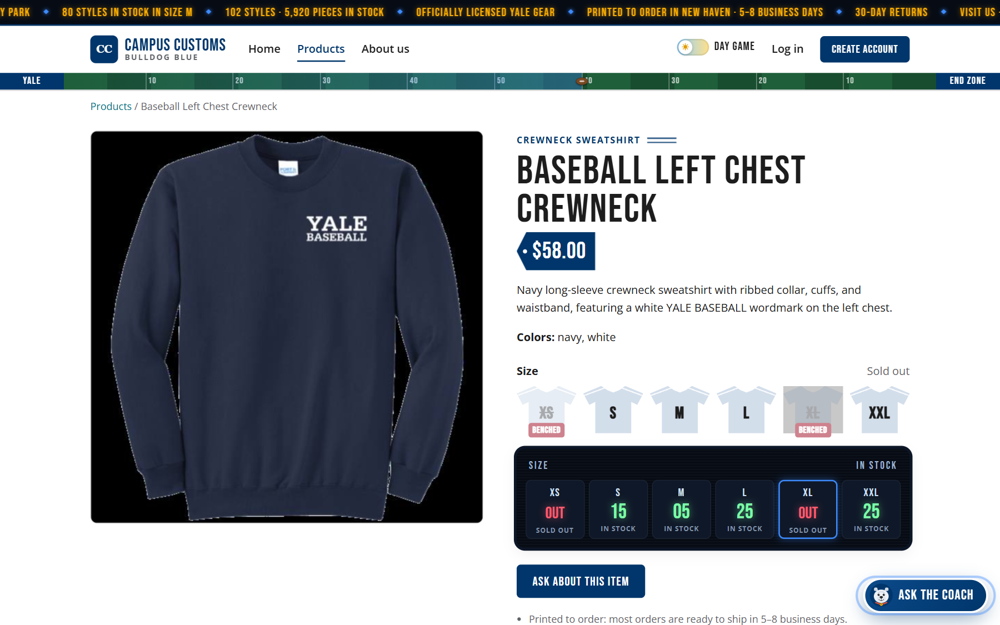

| # | Check | What was tested | Result |
|---|---|---|---|
| 1 | Chat checks inventory | Stock level and price for one size, answered in the chat and compared with the database | PASS |
| 2 | Search-result cards | "What hoodies do you have?" puts product cards on the page; a card opens its product page | PASS |
| 3 | Problem 9 feature: sold-out → alternatives | A sold-out size gets in-stock substitutes in that size (find_alternatives, B2) |
PASS |
How this was tested: on the live, running site (front end http://localhost:5173, FastAPI
backend :8000, model gpt-6-astra via Portkey). We drove Microsoft Edge with
Playwright like a guest shopper (fresh session, no saved size or chat) and took the screenshots from that
browser. Every number in the captions was cross-checked by reading data/campus_customs.db at
capture time. Script: tests/app_check.py; raw results: app_check_images/evidence.json.
Click any screenshot to open it at full size.
Check 1: Chat checks the inventory level of an item
Shopper asked (on the product page): "How many of the Morse 1 4 Zip do you have left in size S, and how
much is it?"
Bulldog Bot replied: "Only 2 left in size S for the Morse 1 4 Zip, and it's $72.00."


Database check (catalogue.price, inventory.quantity for morse-1-4-zip):
| Price | XS | S | M | L | XL | XXL |
|---|---|---|---|---|---|---|
| $72.00 | 15 | 2 ← asked | 8 | 0 | 25 | 2 |
Check 2: Dynamic search-result cards after a category question
Shopper asked (on the home page): "What hoodies do you have?"
Bulldog Bot replied: "We have 12 hoodie options shown on the page, including Basic Hoodie Big Yale,
Champion Full Zip Hood, and sport-specific favorites. What size are you looking for?"


/products/brooks-brothers-double-knit-full-zip-hoodie-yale): large image on one side; type,
name, $88.00, description, colors, sizes and stock on the other.
Database check: all 12 card prices match catalogue.price:
| Card (in shelf order) | Card price | DB price |
|---|---|---|
| Basic Hoodie Big Yale | $68.00 | 68.00 |
| Brooks Brothers Double Knit Full Zip Hoodie Yale | $88.00 | 88.00 |
| Champion Full Zip Hood | $88.00 | 88.00 |
| Champion Reverse Weave Hoodie 1 | $68.00 | 68.00 |
| Crew Left Chest Hoodie | $68.00 | 68.00 |
| District Vit Hoodie Vintage Bulldog | $68.00 | 68.00 |
| District Vit Hoodie Vintage Sailor Bulldog | $68.00 | 68.00 |
| Fencing Left Chest Hoodie | $68.00 | 68.00 |
| Ice Hockey Left Chest Hoodie | $68.00 | 68.00 |
| Sailing Left Chest Hoodie | $68.00 | 68.00 |
| Squash Left Chest Hoodie | $68.00 | 68.00 |
| The Forest School Hoodie | $68.00 | 68.00 |
Check 3: Problem 9 usability feature, sold-out size → in-stock alternatives (B2)
Shopper picked size XL on the Baseball Left Chest Crewneck page and asked: "Is this available in XL?"
Bulldog Bot replied: "Sorry, XL is sold out in Baseball Left Chest Crewneck; S, M, L and XXL are
available. The options on the page are available in XL: Yale Sports Crewneck Baseball shares the baseball
theme and crewneck style, Tri Blend Sports Baseball T Shirt shares the baseball theme, and Hype And Vice
Yale University Offside Crewneck is another crewneck in navy and white."


Database check: the original is out in XL, and every suggested substitute has XL in stock:
| Item | Role | XL in stock (DB) |
|---|---|---|
| Baseball Left Chest Crewneck | requested item | 0 (sold out) |
| Yale Sports Crewneck Baseball | substitute | 12 |
| Tri Blend Sports Baseball T Shirt | substitute | 25 |
| Hype And Vice Yale University Offside Crewneck | substitute | 20 |
Full stock of the requested item: XS 0 · S 15 · M 5 · L 25 · XL 0 · XXL 25. The bot's "S, M, L and XXL are available" is exactly right.